Módulo 3 – Gestión de carteras
Tema 1: Riesgo y marco de rendimiento
Rentabilidad de un activo
Objetivo: Conocer, entender y calcular la rentabilidad de un activo en distintos contextos: histórico, esperado, simple y anualizado.
Rentabilidad simple
La rentabilidad simple mide el rendimiento de un activo entre dos fechas sin considerar la reinversión de beneficios:
\[ R = \frac{P_f - P_i + D}{P_i} \]
Donde:
- \(P_f\) es el precio final del activo
- \(P_i\) es el precio inicial
- \(D\) representa los dividendos o cupones percibidos durante el periodo
Ejemplo:
Juan invierte en una acción de la empresa X comprándola a 100 € el 1 de enero. El 31 de diciembre, la acción vale 110 € y ha recibido un dividendo de 2 € por acción.
La rentabilidad simple es:
\[ R = \frac{110 - 100 + 2}{100} = \frac{12}{100} = 0{,}12 = 12\% \]
Rentabilidad media histórica
Si Juan hubiera mantenido su inversión durante 3 años, con estas rentabilidades anuales: 8 %, 5 % y 12 %, la rentabilidad media sería:
\[ \bar{R} = \frac{8 + 5 + 12}{3} = \frac{25}{3} \approx 8{,}33\% \]
Esto refleja el rendimiento promedio anual obtenido a lo largo del periodo.
Rentabilidad esperada
Juan consulta con su asesor y le presenta los siguientes escenarios para la acción de la empresa X el próximo año:
- Escenario 1 (probabilidad 50 %): rentabilidad del 10 %
- Escenario 2 (probabilidad 30 %): rentabilidad del 5 %
- Escenario 3 (probabilidad 20 %): rentabilidad del -2 %
La rentabilidad esperada sería:
\[ E(R) = (0{,}5 \cdot 0{,}10) + (0{,}3 \cdot 0{,}05) + (0{,}2 \cdot -0{,}02) = 0{,}05 + 0{,}015 - 0{,}004 = 0{,}061 = 6{,}1\% \]
Rentabilidad anualizada
Juan compró la acción a 100 € y la vendió por 110 € al cabo de 6 meses, cobrando además 2 € en dividendos. La rentabilidad simple ya sabemos que fue del 12 %. Para conocer la rentabilidad anualizada:
\[ R_{\text{anual}} = (1 + 0{,}12)^2 - 1 = 1{,}2544 - 1 = 0{,}2544 = 25{,}44\% \]
Rentabilidad de una cartera
Objetivo: Calcular la rentabilidad de una cartera compuesta por varios activos, teniendo en cuenta la ponderación de cada uno de ellos.
Concepto de peso o ponderación
La ponderación de un activo dentro de una cartera indica qué proporción del capital total está invertida en él:
\[ w_i = \frac{V_i}{V_{\text{total}}} \]
Donde:
- \(w_i\) es el peso del activo \(i\)
- \(V_i\) es el valor invertido en el activo \(i\)
- \(V_{\text{total}}\) es el valor total de la cartera
Rentabilidad de una cartera
La rentabilidad de una cartera es la media ponderada de las rentabilidades de los activos que la componen:
\[ R_c = \sum_{i=1}^{n} w_i \cdot R_i \]
Donde:
- \(R_c\) es la rentabilidad de la cartera
- \(w_i\) es el peso del activo \(i\)
- \(R_i\) es la rentabilidad del activo \(i\)
Ejemplo con Juan
Juan diversifica su inversión entre dos activos:
- 60 % en la acción de la empresa X, que le da una rentabilidad del 12 %
- 40 % en bonos del Estado, con rentabilidad del 3 %
La rentabilidad de su cartera es:
\[ R_c = (0{,}6 \cdot 0{,}12) + (0{,}4 \cdot 0{,}03) = 0{,}072 + 0{,}012 = 0{,}084 = 8{,}4\% \]
Volatilidad de un activo
Objetivo: Comprender y calcular la volatilidad como medida del riesgo de un activo, tanto histórica como esperada.
¿Qué es la volatilidad?
La volatilidad mide la variabilidad de los rendimientos de un activo financiero. Cuanto mayor es la volatilidad, mayor es el riesgo percibido.
Se calcula como la desviación típica de los rendimientos:
\[ \sigma = \sqrt{ \frac{1}{n - 1} \sum_{t=1}^{n} (R_t - \bar{R})^2 } \]
Donde:
- \(R_t\) es la rentabilidad en el periodo \(t\)
- \(\bar{R}\) es la rentabilidad media
- \(n\) es el número total de periodos
Ejemplo con Juan
Juan evalúa la acción de la empresa X durante 4 trimestres. Las rentabilidades fueron:
- 5 %, -3 %, 8 %, 2 %
Calculamos la media:
\[ \bar{R} = \frac{5 + (-3) + 8 + 2}{4} = \frac{12}{4} = 3\% \]
Calculamos ahora la varianza y la desviación típica (volatilidad):
\[ \sigma = \sqrt{ \frac{(5 - 3)^2 + (-3 - 3)^2 + (8 - 3)^2 + (2 - 3)^2}{3} } = \sqrt{ \frac{4 + 36 + 25 + 1}{3} } = \sqrt{ \frac{66}{3} } = \sqrt{22} \approx 4{,}69\% \]
Volatilidad anualizada
Si la rentabilidad y la volatilidad se calculan en base mensual o trimestral, se puede anualizar la volatilidad:
\[ \sigma_{\text{anual}} = \sigma_{\text{periódica}} \cdot \sqrt{m} \]
Donde \(m\) es el número de periodos en un año (por ejemplo, 12 si es mensual, 4 si es trimestral).
Nota: La volatilidad anualizada permite comparar activos con diferente frecuencia de datos.
Riesgo de una cartera
Objetivo: Calcular y entender la volatilidad como medida de riesgo de una cartera compuesta por varios activos con diferente correlación.
Volatilidad de una cartera de dos activos
Cuando una cartera incluye dos activos con rentabilidad y riesgo propios, su volatilidad no es simplemente la media ponderada de sus riesgos. La correlación entre ambos activos influye de forma clave:
\[ \sigma_c = \sqrt{ w_1^2 \cdot \sigma_1^2 + w_2^2 \cdot \sigma_2^2 + 2 \cdot w_1 \cdot w_2 \cdot \sigma_1 \cdot \sigma_2 \cdot \rho_{1,2} } \]
Donde:
- \(w_i\) son los pesos de cada activo
- \(\sigma_i\) sus volatilidades
- \(\rho_{1,2}\) es el coeficiente de correlación entre ambos
Ejemplo con Juan
Juan construye una cartera con:
- 60 % en la acción de la empresa X: \(\sigma_1 = 10\%\)
- 40 % en bonos del Estado: \(\sigma_2 = 3\%\)
- Correlación entre ambos: \(\rho = 0{,}2\)
Aplicamos la fórmula:
\[ \sigma_c = \sqrt{ (0{,}6)^2 \cdot (0{,}10)^2 + (0{,}4)^2 \cdot (0{,}03)^2 + 2 \cdot 0{,}6 \cdot 0{,}4 \cdot 0{,}10 \cdot 0{,}03 \cdot 0{,}2 } \]
\[ \sigma_c = \sqrt{ 0{,}0036 + 0{,}000144 + 0{,}000288 } = \sqrt{0{,}004032} \approx 6{,}35\% \]
Casos especiales según la correlación
- \(\rho = +1\): no hay diversificación; la fórmula se convierte en una suma directa de riesgos ponderados.
- \(\rho = 0\): hay diversificación efectiva; el riesgo combinado se reduce.
- \(\rho = -1\): posibilidad de construir una cartera sin riesgo si los pesos están bien elegidos.
Cartera con un activo sin riesgo
Cuando uno de los activos tiene volatilidad cero, la fórmula se simplifica:
\[ \sigma_c = w_r \cdot \sigma_r \]
Donde \(w_r\) y \(\sigma_r\) son el peso y la volatilidad del único activo con riesgo.
Nota: La inclusión de activos sin riesgo permite construir carteras más eficientes si se combinan correctamente con activos volátiles.
El concepto de diversificación
Objetivo: Comprender cómo la diversificación reduce el riesgo de una cartera sin necesidad de aumentar el número de activos de forma indiscriminada.
¿Qué es la diversificación?
La diversificación consiste en combinar activos con comportamientos distintos (correlaciones bajas o negativas) para reducir el riesgo total de la cartera sin reducir necesariamente la rentabilidad esperada.
El beneficio de la diversificación depende de la correlación entre activos:
- Alta correlación positiva (\(\rho \approx +1\)): escasa diversificación.
- Correlación nula (\(\rho = 0\)): diversificación efectiva.
- Correlación negativa (\(\rho < 0\)): diversificación máxima; posible eliminar el riesgo.
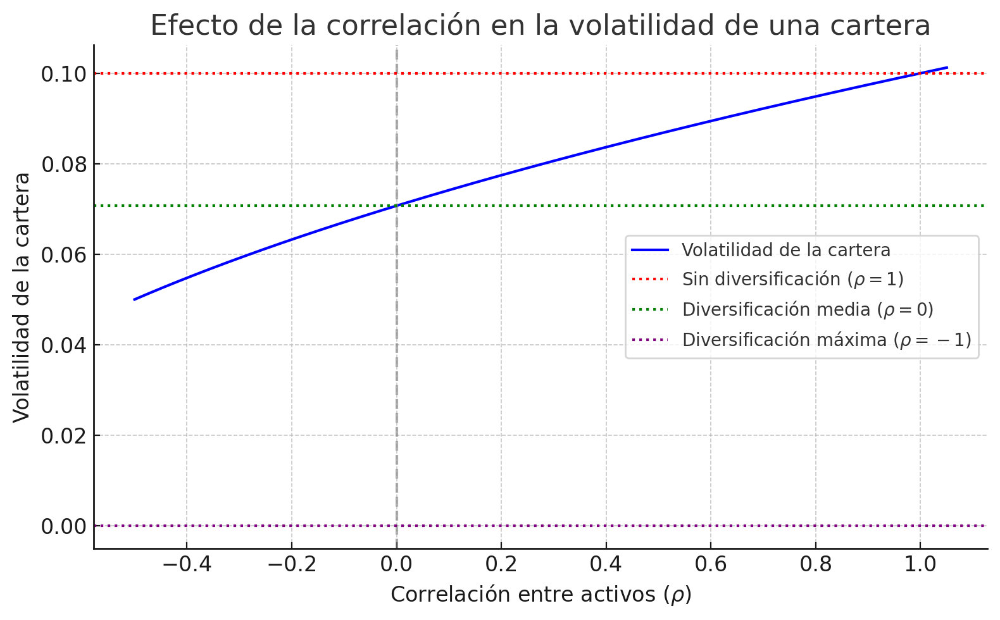
Ejemplo con Juan
Juan decide comparar dos carteras:
- Cartera A: 2 acciones del mismo sector tecnológico con correlación alta (\(\rho = 0{,}9\))
- Cartera B: una acción tecnológica y un bono público con correlación negativa (\(\rho = -0{,}2\))
Aunque ambas carteras pueden tener rentabilidades similares, la cartera B tendrá menor riesgo, gracias al efecto diversificador.
Conclusión: La clave no es invertir en muchos activos, sino en activos cuya evolución no sea similar. A veces, dos activos bien elegidos ofrecen más diversificación que diez mal combinados.
Diversificación y carteras de pocos activos
Es posible construir una cartera con bajo riesgo usando solo dos activos si:
- Ambos tienen volatilidades positivas
- Su correlación es suficientemente baja o negativa
- Se eligen los pesos adecuados
En el caso extremo de correlación perfecta negativa (\(\rho = -1\)), se puede construir una cartera con riesgo nulo:
\[ w_1 \cdot \sigma_1 = w_2 \cdot \sigma_2 \]
Donde \(w_2 = 1 - w_1\)
Ejemplo aplicado:
Juan combina dos activos con igual volatilidad (10 %) y correlación \(-1\). Si invierte el 50 % en cada uno, logra una cartera sin riesgo.
¿Y si la correlación es cero?
Cuando \(\rho = 0\), los activos no tienen una relación lineal, pero tampoco están sincronizados. Esto significa que sus movimientos no se anulan ni se refuerzan sistemáticamente, lo que sí permite reducir el riesgo total gracias a la compensación parcial de las oscilaciones individuales.
✔ Incluso sin relación directa, la falta de sincronía reduce la variabilidad de la cartera.
Por tanto, sí hay diversificación efectiva aunque \(\rho = 0\).
Supuestos de la hipótesis de normalidad
Objetivo: Comprender el uso de la distribución normal como herramienta para estimar probabilidades de rentabilidad y riesgo.
¿Qué es la hipótesis de normalidad?
Se asume que las rentabilidades de los activos siguen una distribución normal o de “campana de Gauss”, caracterizada por dos parámetros:
- Media (\(\mu\)): rentabilidad esperada
- Desviación típica (\(\sigma\)): riesgo o volatilidad
Esta hipótesis permite estimar probabilidades de obtener ciertas rentabilidades.
Intervalos de confianza
Bajo la hipótesis de normalidad:
- Aproximadamente el 68 % de las observaciones se encuentran entre \(\mu - \sigma\) y \(\mu + \sigma\)
- Aproximadamente el 95 % entre \(\mu - 2\sigma\) y \(\mu + 2\sigma\)
- Las colas representan valores extremos (pérdidas o ganancias muy improbables)
Ejemplo con Juan
Juan espera una rentabilidad media anual del 6 % con una volatilidad del 10 %.
Con una distribución normal, estima:
- Un 68 % de probabilidad de obtener una rentabilidad entre −4 % y +16 %
- Un 95 % de probabilidad de estar entre −14 % y +26 %
Horizonte temporal y reducción del riesgo
A largo plazo, la probabilidad de obtener pérdidas disminuye, aunque la volatilidad absoluta pueda aumentar. Esto se debe a que los rendimientos se acumulan y tienden a estabilizarse en torno a la media si la distribución se mantiene.
Interpretación clave:
La hipótesis de normalidad no siempre se cumple en la realidad, pero es útil para estimaciones básicas de probabilidad y gestión del riesgo, sobre todo en carteras diversificadas.
Representación gráfica
A continuación, se muestra una distribución normal de rentabilidad esperada (\(\mu = 6\%\)) y volatilidad (\(\sigma = 10\%\)), con los intervalos del 68 % y el 95 % destacados para facilitar la interpretación visual de los riesgos.
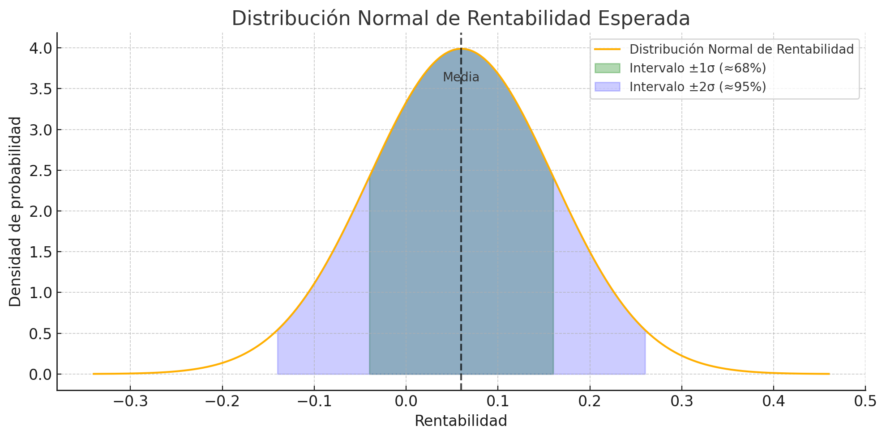
Tema 2: Mercados de capital eficientes
El concepto de eficiencia en los mercados de capitales
Objetivo: Comprender qué significa que un mercado sea eficiente y qué tipos de información se consideran en los distintos niveles de eficiencia.
Un mercado de capitales eficiente es aquel en el que los precios de los activos reflejan toda la información disponible de forma rápida y completa. Esto implica que:
- Es difícil obtener beneficios extraordinarios de forma sistemática.
- Cualquier nueva información relevante ya está recogida en los precios.
Tipos de información
- Información histórica: precios y volúmenes pasados
- Información pública actual: noticias, balances, informes económicos
- Información privada: datos no públicos conocidos solo por algunos agentes
Un mercado es más eficiente cuanto más información incorpora en los precios.
Características de un mercado eficiente
- Transparente: acceso igualitario a la información
- Amplitud: número elevado de participantes y activos
- Homogeneidad: productos comparables y con normas comunes
- Flexibilidad: capacidad de adaptarse a cambios
- Libertad: ausencia de barreras significativas a la negociación
- Estabilidad: precios no excesivamente volátiles por factores irracionales
Ejemplo: En un mercado eficiente, una noticia positiva sobre los beneficios de una empresa se refleja instantáneamente en el precio de su acción. No es posible anticiparse a los movimientos y beneficiarse de ellos si todos tienen acceso a la misma información al mismo tiempo.
Hipótesis de eficiencia del mercado
Objetivo: Comprender los distintos grados o niveles de eficiencia y su impacto en la utilidad del análisis técnico, fundamental o del acceso a información privilegiada.
Existen tres niveles de eficiencia según el tipo de información que se supone incorporada en los precios de los activos:
Hipótesis débil
- Los precios reflejan toda la información pasada: precios históricos, volúmenes, tendencias.
- Implicación: el análisis técnico no permite obtener rentabilidades superiores, ya que la evolución pasada ya está reflejada en el precio actual.
Hipótesis semifuerte
- Los precios reflejan la información pasada y toda la información pública disponible (noticias, informes, balances, decisiones macroeconómicas, etc.).
- Implicación: el análisis fundamental tampoco es útil para anticiparse al mercado.
Hipótesis fuerte
- Los precios recogen toda la información existente, incluso la privada o privilegiada.
- Implicación: ni siquiera el uso de información confidencial (por ejemplo, en insider trading) permite obtener beneficios consistentes.
Importante: Estos niveles son acumulativos. La eficiencia fuerte incluye la semifuerte, y esta a su vez incluye la débil. No se debe asumir que si un análisis no funciona en un nivel, funcionará en otro inferior.
Resumen en tabla
| Nivel de eficiencia | Información incorporada | Consecuencia principal |
|---|---|---|
| Débil | Información histórica | ❌ Análisis técnico no útil |
| Semifuerte | Histórica + pública actual | ❌ Análisis fundamental no útil |
| Fuerte | Toda la información (incluida privada) | ❌ El insider trading no genera beneficios |
Consecuencias de la eficiencia del mercado y anomalías
Objetivo: Identificar las implicaciones prácticas de operar en mercados eficientes y conocer situaciones que desafían la hipótesis de eficiencia.
Consecuencias generales de la eficiencia
Si el mercado es eficiente, los precios ya incorporan toda la información disponible. Por tanto:
- No es posible batir al mercado de forma consistente mediante análisis técnico ni fundamental.
- La mejor estrategia sería la gestión pasiva, que replica un índice representativo (por ejemplo, un ETF sobre el IBEX 35).
- La gestión pasiva reduce costes de análisis, rotación y comisiones, lo cual es especialmente ventajoso para el inversor particular.
Justificación de la gestión activa
En la práctica, los mercados no son completamente eficientes, por razones como:
- Retrasos en la difusión de información
- Acceso desigual a noticias o datos clave
- Comportamientos irracionales de los inversores (emocionalidad, sesgos)
- Existencia de costes de transacción, impuestos o barreras legales
Cuando se detectan estas ineficiencias temporales, puede justificarse una estrategia de gestión activa orientada a:
- Seleccionar activos infravalorados (stock picking)
- Aprovechar momentos de entrada o salida (market timing)
Pero esta estrategia solo es rentable si el exceso de rentabilidad compensa los costes.
Comportamiento aleatorio de los precios
En un mercado eficiente, los precios siguen un camino aleatorio (random walk):
> La nueva información es imprevisible, y por tanto, los movimientos futuros del precio también lo son.
Consecuencia clave:
Si los precios siguen un camino aleatorio, la rentabilidad esperada ajustada al riesgo es la misma para todos los activos (bajo hipótesis de eficiencia), y la estrategia óptima será diversificar.
Anomalías observadas
Existen patrones recurrentes que contradicen, en ocasiones, la eficiencia:
- Efecto enero: subidas de precios en los primeros días del año
- Efecto fin de semana: rentabilidades negativas frecuentes los lunes
- Efecto vacaciones: menor volatilidad y liquidez en periodos estivales
- Efecto fin de trimestre: movimientos por ajustes contables o de carteras
Estas anomalías han sido documentadas, aunque no siempre se repiten ni permiten obtener beneficios consistentes después de costes.
Conclusión:
El mercado tiende a ser eficiente, pero existen momentos y segmentos donde aparecen ineficiencias. Detectarlas y aprovecharlas requiere análisis riguroso, rapidez de ejecución y costes bajos.
Tema 3: Teoría de carteras
Modelo media-varianza de Markowitz
Objetivo: Comprender los fundamentos del modelo de Markowitz, incluyendo los conceptos de frontera eficiente, carteras factibles y diversificación óptima.
¿Qué propone Markowitz?
Harry Markowitz (1952) formuló el primer modelo matemático para optimizar carteras de inversión, introduciendo la idea de que el inversor debe considerar simultáneamente:
- La rentabilidad esperada (\(E(R)\))
- El riesgo asumido, medido por la varianza o desviación típica (\(\sigma\))
Cada combinación de activos produce una cartera con una rentabilidad y un riesgo asociados. Al representar todos los posibles portafolios, se obtiene el conjunto de carteras factibles.
Frontera eficiente
De entre todas las carteras posibles, la frontera eficiente es el subconjunto que:
- Maximiza la rentabilidad para un nivel dado de riesgo
- Minimiza el riesgo para una rentabilidad esperada
Se representa como una curva cóncava creciente en el plano rentabilidad–riesgo.
Fórmulas clave
Rentabilidad esperada de la cartera (dos activos):
\[ E(R_c) = w_1 \cdot E(R_1) + w_2 \cdot E(R_2) \]
Volatilidad de la cartera (dos activos):
\[ \sigma_c = \sqrt{ w_1^2 \cdot \sigma_1^2 + w_2^2 \cdot \sigma_2^2 + 2 \cdot w_1 \cdot w_2 \cdot \sigma_1 \cdot \sigma_2 \cdot \rho } \]
Donde:
- \(w_1\), \(w_2\) son los pesos de los activos (con \(w_1 + w_2 = 1\))
- \(\sigma_1\), \(\sigma_2\) sus desviaciones típicas
- \(\rho\) la correlación entre los activos
Representación gráfica
A continuación se muestra un gráfico representativo de la frontera eficiente con dos activos (rentabilidades del 8 % y 12 %, correlación 0,2):
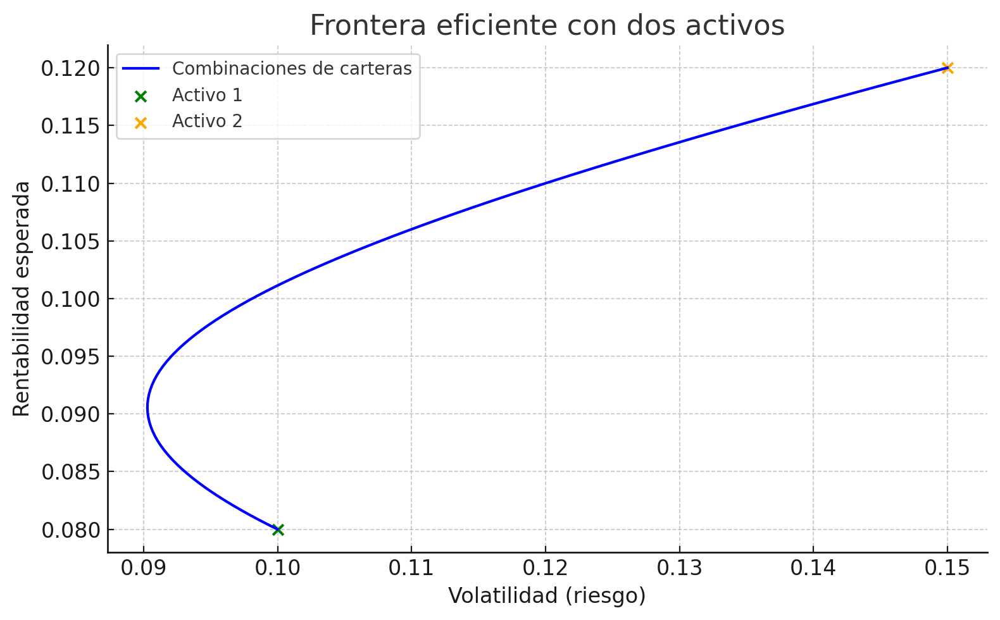
Selección de la cartera óptima
Objetivo: Comprender cómo se elige una cartera eficiente en función del perfil de riesgo del inversor mediante curvas de indiferencia.
Inversores y aversión al riesgo
Cada inversor tiene un perfil distinto frente al riesgo. Según su aversión, preferirá combinaciones distintas de rentabilidad y volatilidad. Este comportamiento se representa mediante curvas de indiferencia: combinaciones de riesgo y rentabilidad que proporcionan la misma utilidad esperada.
- Cuanto más alejada esté la curva del origen, mayor satisfacción proporciona.
- Un inversor más averso al riesgo tendrá curvas más “cerradas”.
- Uno más tolerante al riesgo aceptará carteras con mayor volatilidad.
Utilidad esperada
Una función de utilidad típica es:
\[ U = E(R) - \frac{1}{2} A \cdot \sigma^2 \]
Donde:
- \(U\) es la utilidad del inversor
- \(E(R)\) es la rentabilidad esperada
- \(\sigma^2\) es la varianza de la cartera
- \(A\) es el coeficiente de aversión al riesgo
Cartera óptima
La cartera óptima es aquella que maximiza la utilidad del inversor, es decir, el punto de tangencia entre la frontera eficiente y la curva de indiferencia más alta.
Interpretación visual:
La cartera óptima es la más rentable que un inversor está dispuesto a asumir, dado su perfil de riesgo. Todas las carteras por debajo de ese punto le resultan menos satisfactorias, y por encima ya no serían alcanzables.
Representación gráfica
El siguiente gráfico ilustra el proceso de elección de la cartera óptima, mostrando cómo el inversor determina su mejor combinación riesgo-rentabilidad a partir del punto de tangencia entre su curva de indiferencia y la frontera eficiente.
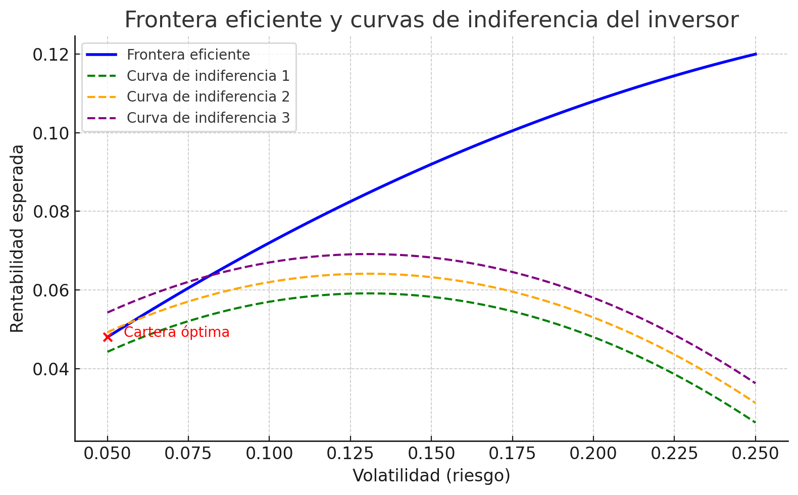
Modelo de mercado de Sharpe: línea característica y beta
Objetivo: Comprender cómo se explica el comportamiento de un activo en función del mercado mediante la línea característica, y cómo se interpreta el coeficiente beta.
¿Qué es el modelo de Sharpe?
El modelo de Sharpe o modelo de mercado simplifica el análisis de carteras considerando que la rentabilidad de cada activo depende de un único factor: la rentabilidad del mercado.
Este modelo permite descomponer el riesgo de un activo en:
- Riesgo sistemático: dependiente del mercado
- Riesgo no sistemático: propio del activo, diversificable
Línea característica de un activo
La línea característica muestra la relación lineal entre la rentabilidad de un activo y la del mercado:
\[ R_i = \alpha_i + \beta_i \cdot R_m + \varepsilon \]
Donde:
- \(R_i\) es la rentabilidad del activo
- \(R_m\) es la rentabilidad del mercado
- \(\beta_i\) mide la sensibilidad del activo al mercado
- \(\alpha_i\) es el rendimiento adicional no explicado por el mercado
- \(\varepsilon\) es un término de error aleatorio (riesgo no sistemático)
Interpretación del coeficiente beta
- Si \(\beta = 1\): el activo replica el mercado
- Si \(\beta > 1\): el activo es más volátil que el mercado
- Si \(\beta < 1\): el activo es más defensivo o menos sensible
- Si \(\beta < 0\): el activo se comporta en sentido contrario al mercado
Ejemplo didáctico:
Un activo con \(\beta = 1{,}2\) tiende a subir un 12 % cuando el mercado sube un 10 %. Si \(\alpha = 0{,}01\), además obtiene una rentabilidad adicional del 1 %.
Representación gráfica
El siguiente gráfico muestra una simulación de la línea característica de un activo, donde:
- La pendiente corresponde al coeficiente beta
- El eje vertical corta en \(\alpha\)
- Las dispersiones en torno a la recta reflejan el riesgo no sistemático
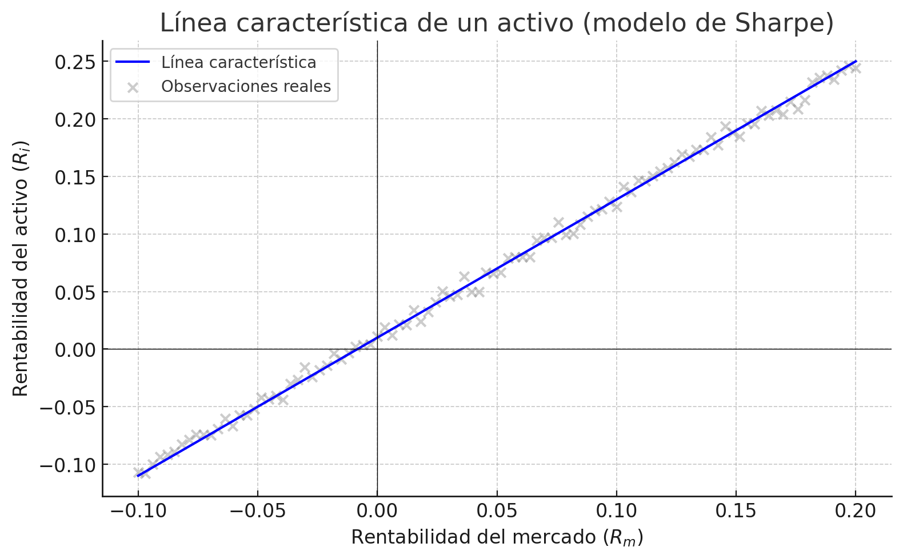
Riesgo sistemático y no sistemático. Beta de una cartera
Objetivo: Distinguir entre riesgo sistemático y no sistemático, y calcular la beta de una cartera como medida del riesgo de mercado agregado.
Descomposición del riesgo
En el modelo de Sharpe, el riesgo total de un activo (\(\sigma^2\)) puede descomponerse en:
- Riesgo sistemático: depende del mercado, no se puede eliminar
- Riesgo no sistemático: es propio del activo y puede diversificarse
La varianza total se expresa como:
\[ \sigma_i^2 = \beta_i^2 \cdot \sigma_m^2 + \sigma^2_{\varepsilon} \]
Donde:
- \(\beta_i\) es la beta del activo
- \(\sigma_m^2\) es la varianza del mercado
- \(\sigma^2_{\varepsilon}\) es la varianza del componente aleatorio (no sistemático)
Representación gráfica
El siguiente gráfico muestra cómo evoluciona el riesgo total de una cartera a medida que aumenta el número de activos, según un enfoque empírico de diversificación ampliamente aceptado en gestión de carteras.
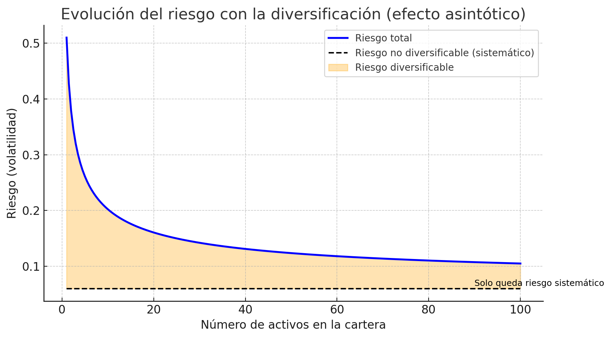
- El riesgo diversificable disminuye conforme se añaden más activos.
- El riesgo no diversificable (sistemático) permanece constante: es el mínimo riesgo posible.
- La curva del riesgo total muestra un comportamiento asintótico: al principio el riesgo disminuye con rapidez, pero la ganancia marginal de diversificación se reduce progresivamente a medida que se añaden más activos.
Importante:
Este comportamiento refleja la lógica de los rendimientos decrecientes en la diversificación. Con unos 20–30 activos bien combinados, ya se consigue eliminar prácticamente todo el riesgo diversificable.
Diversificación ingenua o naive diversification
Una práctica común entre inversores minoristas es la llamada diversificación ingenua, que consiste en repartir la inversión a partes iguales entre varios activos, sin considerar correlaciones, sectores, ni perfiles de riesgo.
Aunque no es óptima, esta técnica:
- Puede ser efectiva para reducir el riesgo no sistemático
- Resulta mejor que invertir todo en un solo activo
- Se aproxima al mínimo de riesgo diversificable si el número de activos supera cierto umbral (15 o más)
Conclusión:
La diversificación —incluso naive— permite eliminar gran parte del riesgo total. Pero siempre quedará un componente no eliminable: el riesgo sistemático, inherente al mercado.
Beta de una cartera
La beta de una cartera es la media ponderada de las betas de los activos que la componen:
\[ \beta_c = \sum_{i=1}^{n} w_i \cdot \beta_i \]
Donde:
- \(w_i\) es el peso del activo \(i\) en la cartera
- \(\beta_i\) es la beta individual de cada activo
Esta beta resume cómo responde la cartera completa ante movimientos del mercado.
Ejemplo con Juan:
Juan tiene una cartera con:
- 60 % en una acción con \(\beta = 1{,}3\)
- 40 % en bonos con \(\beta = 0{,}2\)
Entonces, la beta de la cartera será:
\[ \beta_c = 0{,}6 \cdot 1{,}3 + 0{,}4 \cdot 0{,}2 = 0{,}78 + 0{,}08 = 0{,}86 \]
La cartera de Juan es menos volátil que el mercado, aunque mantiene exposición al riesgo sistemático.
Conclusión
- Una cartera bien diversificada minimiza el riesgo no sistemático
- La beta se convierte en la referencia principal para medir el riesgo relevante a largo plazo
Modelo de equilibrio de activos (CAPM): Capital Market Line (CML)
Objetivo: Comprender el modelo CAPM, su interpretación gráfica a través de la CML y su utilidad para evaluar carteras eficientes.
Fundamentos del CAPM
El Capital Asset Pricing Model (CAPM) es un modelo de equilibrio que parte del modelo de Sharpe y añade un supuesto clave:
- Existe un activo sin riesgo disponible para todos los inversores
Bajo esta premisa, todos los inversores racionales combinan:
- El activo sin riesgo
- La cartera de mercado óptima, que se convierte en el único portafolio eficiente con activos con riesgo
Capital Market Line (CML)
La CML representa todas las combinaciones posibles entre el activo sin riesgo y la cartera de mercado. Es la nueva frontera eficiente bajo el CAPM.
Su ecuación es:
\[ E(R_p) = R_f + \left( \frac{E(R_m) - R_f}{\sigma_m} \right) \cdot \sigma_p \]
Donde:
- \(E(R_p)\): rentabilidad esperada de la cartera
- \(R_f\): rentabilidad del activo sin riesgo
- \(E(R_m)\): rentabilidad esperada de la cartera de mercado
- \(\sigma_p\): riesgo (volatilidad) de la cartera
- \(\sigma_m\): riesgo de la cartera de mercado
Interpretación:
La pendiente de la CML es el exceso de rentabilidad por unidad de riesgo total. Representa el mejor intercambio posible entre riesgo y rentabilidad en el mercado.
Inversores con distinto perfil
- Un inversor conservador se situará entre \(R_f\) y la cartera de mercado.
- Un inversor agresivo puede “apalancarse” y situarse más allá de la cartera de mercado.
Representación gráfica
El siguiente gráfico ilustra con claridad el modelo CAPM:
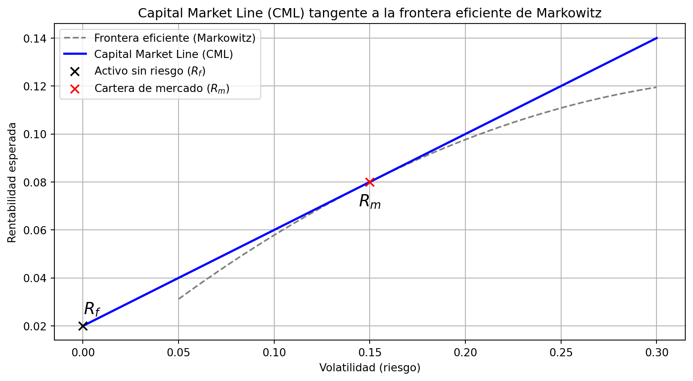
- La línea del mercado de capitales (CML) parte del activo sin riesgo y es tangente a la frontera eficiente.
- El punto de tangencia representa la cartera de mercado, común a todos los inversores bajo equilibrio.
- A lo largo de la CML se sitúan todas las combinaciones posibles entre el activo sin riesgo y la cartera de mercado, tanto con apalancamiento como sin él.
En equilibrio, los inversores racionales no eligen entre múltiples carteras eficientes con activos con riesgo, sino que combinan el activo sin riesgo con la cartera de mercado, única y común para todos.
La CML ofrece la mejor relación rentabilidad-riesgo disponible en el mercado.
Cartera de mercado vs. benchmark
En el modelo CAPM, la cartera de mercado es una construcción teórica que incluye todos los activos financieros disponibles, ponderados por su valor de mercado. Sin embargo, esta cartera es inobservable en la práctica.
Por ello, en aplicaciones reales se utiliza un índice de referencia o benchmark amplio y diversificado (como el S&P 500, el MSCI World o el IBEX 35) como aproximación razonable de la cartera de mercado.
Este enfoque permite estimar coeficientes beta, evaluar carteras y aplicar herramientas como la Security Market Line (SML) o el alfa de Jensen de forma operativa.
Security Market Line (SML)
La Security Market Line (SML) representa la relación teórica entre el riesgo sistemático de un activo (medido por su beta) y su rentabilidad esperada, según el modelo CAPM.
La fórmula que define la SML es:
\[ E(R_i) = R_f + \beta_i \cdot (E(R_m) - R_f) \]
Donde:
- \(E(R_i)\) es la rentabilidad esperada del activo
- \(R_f\) es la rentabilidad del activo sin riesgo
- \(\beta_i\) es la beta del activo respecto al mercado
- \(E(R_m)\) es la rentabilidad esperada del mercado
Representación gráfica
El siguiente gráfico muestra la Security Market Line (SML) según el modelo CAPM y la valoración relativa de los activos en función de su beta:
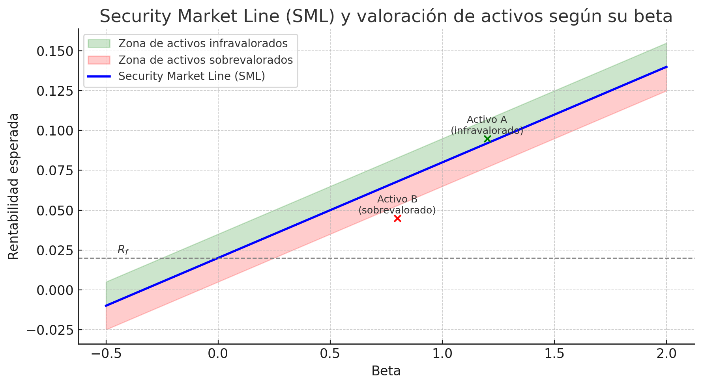
La línea azul representa la SML, que relaciona el riesgo sistemático (beta) con la rentabilidad esperada.
- La zona verde sombreada está por encima de la SML: aquí se encuentran los activos infravalorados, que ofrecen más rentabilidad de la que deberían según su beta.
- La zona roja sombreada, por debajo de la SML, indica activos sobrevalorados, que ofrecen menos rentabilidad de la que se esperaría para su nivel de riesgo.
Ejemplo didáctico:
El Activo A tiene una beta de 1,2 y una rentabilidad esperada mayor que la que le corresponde según la SML → está infravalorado.
Esto significa que los inversores están obteniendo más rentabilidad por unidad de riesgo de la que marca el mercado. Esta situación atraerá demanda de compra, lo que hará que su precio suba y, por tanto, su rentabilidad esperada baje hasta situarse sobre la SML.
El Activo B tiene una beta de 0,8 y una rentabilidad esperada menor que la que debería tener según la SML → está sobrevalorado.
Los inversores evitarán este activo, provocando ventas. Esto reducirá su precio y hará que su rentabilidad esperada aumente, ajustándose también hacia la SML.
Según el modelo CAPM, estos mecanismos de corrección a través de los precios hacen que, en equilibrio, todos los activos correctamente valorados se sitúen sobre la SML, reflejando adecuadamente su nivel de riesgo sistemático.
Otros modelos teóricos: Graham y Dodd
Antes del desarrollo formal de la Teoría de Carteras y el modelo CAPM, Benjamin Graham y David Dodd ya defendían la idea de que ciertos activos podían estar infravalorados o sobrevalorados en función de su análisis fundamental.
Este enfoque, precursor del value investing, parte de la premisa de que:
- Los mercados no son perfectamente eficientes.
- El valor intrínseco de una acción puede estimarse mediante análisis contable y financiero.
- El inversor debe comprar activos cuyo precio de mercado sea inferior a su valor intrínseco estimado, y venderlos cuando el mercado los revalúe.
Principios clave del modelo Graham & Dodd:
- Evaluar la acción en función de sus fundamentales: beneficios, dividendos, valor contable, etc.
- Exigir un margen de seguridad: diferencia entre el valor estimado y el precio de mercado.
- Buscar empresas sólidas, bien gestionadas y con perspectivas sostenibles a largo plazo.
Este enfoque tiene una lógica opuesta al CAPM, que asume mercados eficientes. En cambio, Graham y Dodd parten de la idea de que la paciencia, el análisis y el juicio del inversor pueden generar rentabilidades superiores al promedio del mercado.
Representación gráfica
El siguiente gráfico ilustra el concepto de margen de seguridad, uno de los pilares del enfoque de Graham y Dodd:
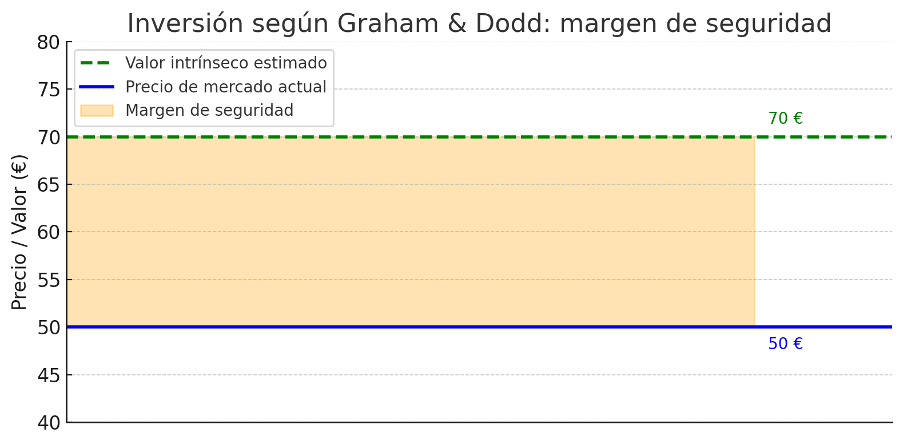
- La línea azul representa el precio de mercado actual del activo.
- La línea verde discontinua marca el valor intrínseco estimado según el análisis fundamental.
- La zona sombreada en naranja corresponde al margen de seguridad: es la diferencia entre el precio al que cotiza el activo y el valor que realmente se le atribuye.
Este enfoque se basa en la idea de que el mercado no siempre valora correctamente los activos, y que el análisis racional y la paciencia permiten detectar oportunidades de inversión sólidas.
Tema 4: Proceso de asignación de activos
La asignación de activos es el proceso mediante el cual se decide qué proporción del capital total se invertirá en las distintas clases de activos (monetario, renta fija, renta variable, etc.), en función de los objetivos del inversor, su perfil de riesgo y las condiciones del mercado.
Este proceso es clave para:
- Establecer una política de inversión coherente.
- Controlar el riesgo asumido.
- Optimizar la rentabilidad esperada.
Tipos de asignación:
- Asignación estratégica: define el reparto a largo plazo entre clases de activos.
- Asignación táctica: introduce ajustes temporales aprovechando oportunidades de mercado.
- Asignación dinámica: permite modificar continuamente las ponderaciones según la evolución del inversor o del entorno económico.
Distribución de activos: matriz de asset allocation
Una vez definida la política de inversión, se realiza la distribución concreta del capital entre los distintos activos, sectores o áreas geográficas. Esta distribución se representa normalmente mediante una matriz de asignación de activos.
La matriz ayuda a visualizar:
- Qué tipos de activos se incluirán en la cartera (monetario, renta fija, renta variable, alternativos…).
- Cómo se reparte el capital entre zonas geográficas (nacional, europea, global…).
- Qué sectores económicos tienen mayor o menor peso en la cartera.
| Clase de activo | % asignado | Zona geográfica | Sector dominante |
|---|---|---|---|
| Renta fija | 40 % | Europa | Deuda soberana |
| Renta variable | 45 % | Global | Tecnología, salud |
| Mercado monetario | 10 % | Nacional | Corto plazo |
| Alternativos | 5 % | Diversificado | Inmobiliario, oro |
Esta matriz debe estar alineada con el perfil de riesgo del inversor y ser revisada periódicamente para adaptarse a los cambios en los mercados o en los objetivos personales.
Elaboración de carteras modelo y uso del benchmark
Una cartera modelo es una propuesta de distribución de activos diseñada como referencia o punto de partida para ajustarse a distintos perfiles de inversor. No es una cartera personalizada, pero sirve como guía para replicar o adaptar decisiones de inversión.
Además, se suele comparar el rendimiento de una cartera con un benchmark o índice de referencia que refleje la evolución del mercado o segmento invertido.
Elementos clave:
- Un benchmark debe ser:
- Representativo del universo de inversión.
- Transparente y replicable.
- Coherente con los objetivos de la cartera.
- Ejemplos de benchmarks:
- IBEX 35 para renta variable española.
- MSCI World para renta variable global.
- Bloomberg Euro-Aggregate para renta fija euro.
- Las carteras modelo pueden tener bandas de exposición (por ejemplo, renta variable global entre 40 % y 60 %) para permitir ajustes sin salirse del perfil objetivo.
El uso de carteras modelo ayuda a mantener una disciplina de inversión y facilita la medición del rendimiento del gestor respecto al índice de referencia.
Tipos de asignación de activos: estratégica y táctica
Existen dos enfoques principales para gestionar la asignación de activos dentro de una cartera: la asignación estratégica y la asignación táctica.
Ambas buscan equilibrar el binomio rentabilidad–riesgo, pero lo hacen con horizontes temporales y criterios distintos.
Define una estructura de cartera a largo plazo, basada en el perfil de riesgo del inversor.
Parte del análisis de:
- Objetivos financieros.
- Horizonte temporal.
- Tolerancia al riesgo.
Supone mantener ponderaciones estables con revisiones periódicas.
Ejemplo: mantener un 60 % en renta variable global y 40 % en renta fija euro.
Permite realizar ajustes temporales sobre la asignación estratégica para aprovechar oportunidades de mercado.
Está condicionada por factores como:
- Ciclo económico.
- Expectativas de tipos de interés.
- Valoraciones relativas de activos.
Ejemplo: aumentar exposición a renta variable en momentos de corrección de precios, reduciendo temporalmente el peso de renta fija.
En la práctica, muchos inversores combinan ambos enfoques: la asignación estratégica proporciona estabilidad y coherencia, mientras que la táctica introduce flexibilidad para adaptarse al entorno.
Tema 5: Medición y atribución de resultados
Medir correctamente la rentabilidad y el riesgo de una cartera es esencial para evaluar la eficacia del gestor, justificar las decisiones de inversión y ofrecer transparencia al cliente.
Este proceso incluye:
- Cálculo de la rentabilidad obtenida (del inversor y del gestor).
- Evaluación de la rentabilidad ajustada al riesgo mediante ratios como Sharpe o Treynor.
- Comparación con un benchmark o índice de referencia.
- Atribución de resultados, es decir, identificar qué parte del rendimiento se debe a decisiones específicas (selección de activos, distribución de activos, etc.).
Objetivos principales de esta fase:
- Valorar el desempeño del gestor de forma objetiva.
- Detectar puntos fuertes y áreas de mejora.
- Comunicar resultados al cliente de forma clara y justificada.
Medidas de rentabilidad
Para evaluar una cartera de inversión, es necesario distinguir entre tres tipos de rentabilidad:
- Rentabilidad simple: mide el crecimiento de valor de una inversión en un periodo.
- Rentabilidad del inversor (TIR): considera los flujos de entrada y salida atribuibles al cliente.
- Rentabilidad del gestor (TGR): mide el rendimiento generado por la estrategia, sin tener en cuenta las decisiones de aportación o reembolso del inversor.
Rentabilidad simple
\[ R = \frac{V_f - V_i}{V_i} \]
Donde:
- \(V_f\) es el valor final de la inversión.
- \(V_i\) es el valor inicial.
Es una medida directa y útil para comparar periodos cortos, aunque no tiene en cuenta los flujos intermedios.
Rentabilidad del inversor: TIR (Tasa Interna de Retorno)
Es la tasa que iguala el valor actual neto de los flujos de caja del inversor a su inversión inicial. Considera todas las aportaciones y retiradas realizadas por el cliente.
Se calcula resolviendo:
\[ 0 = \sum_{t=0}^{n} \frac{F_t}{(1 + \text{TIR})^t} \]
Donde \(F_t\) son los flujos netos del inversor en cada periodo \(t\).
Rentabilidad del gestor: TGR (Tasa Geométrica de Rentabilidad)
Mide la rentabilidad generada exclusivamente por la gestión de la cartera, sin que los flujos del cliente distorsionen el resultado. Se basa en el valor liquidativo de la cartera.
Se calcula como:
\[ \text{TGR} = \left( \frac{V_f}{V_i} \right)^{1/n} - 1 \]
Interpretación conjunta:
- Si la TIR > TGR, el inversor ha acertado con el “timing” de sus aportaciones.
- Si la TIR < TGR, el cliente ha entrado o salido en momentos menos favorables.
Ejemplo comparativo: TGR del gestor vs. TIR de los inversores
El siguiente gráfico ilustra cómo la Tasa Interna de Retorno (TIR) de distintos inversores puede diferir de la Tasa Geométrica de Rentabilidad (TGR) generada por la gestión profesional:
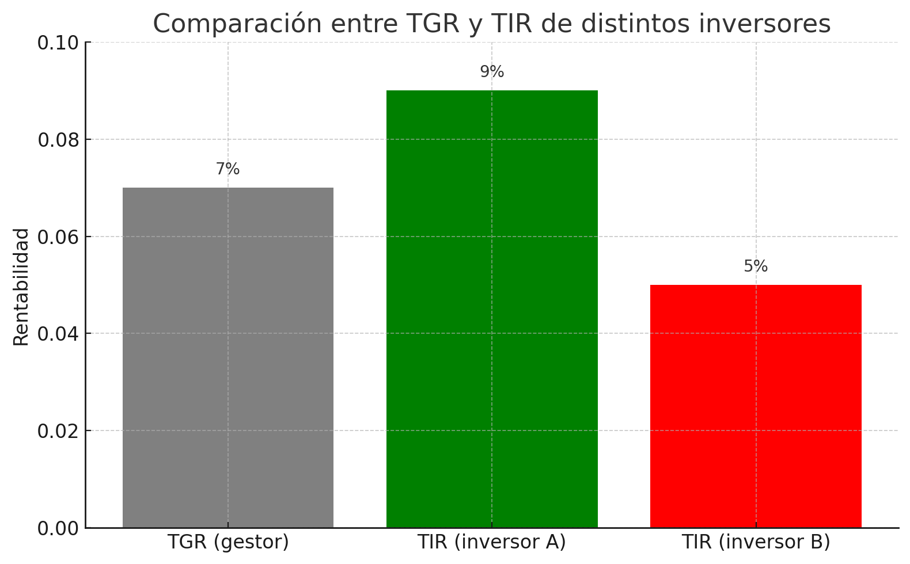
- La TGR (7 %) refleja la rentabilidad generada por la cartera independientemente de los flujos del cliente.
- El inversor A obtuvo una TIR superior (9 %) al invertir en momentos favorables: supo aprovechar las caídas o entrar en fases de crecimiento.
- El inversor B obtuvo una TIR inferior (5 %) al realizar aportaciones o reembolsos en momentos desfavorables.
Este ejemplo demuestra que incluso con una misma estrategia de gestión, el comportamiento del cliente puede influir significativamente en su resultado final.
Tabla comparativa:
| Concepto | Rentabilidad | Interpretación |
|---|---|---|
| TGR (gestor) | 7,00 % | Rentabilidad generada por la gestión profesional |
| TIR (inversor A) | 9,00 % | El inversor aportó capital en momentos favorables |
| TIR (inversor B) | 5,00 % | El inversor entró o salió en momentos desfavorables |
Medidas de rentabilidad ajustadas al riesgo
No basta con conocer la rentabilidad obtenida por una cartera: es esencial evaluar si dicha rentabilidad justifica el nivel de riesgo asumido. Para ello se utilizan distintos indicadores que combinan rentabilidad y riesgo.
Los tres ratios más utilizados son:
Ratio de Sharpe
\[ \text{Sharpe} = \frac{R_p - R_f}{\sigma_p} \]
- \(R_p\): rentabilidad de la cartera
- \(R_f\): rentabilidad del activo sin riesgo
- \(\sigma_p\): desviación típica de la cartera (riesgo total)
Mide la rentabilidad por cada unidad de riesgo total. Cuanto mayor sea el ratio, mejor ha sido la relación rentabilidad–riesgo.
Ratio de Treynor
\[ \text{Treynor} = \frac{R_p - R_f}{\beta_p} \]
- \(\beta_p\): beta de la cartera respecto al mercado
Mide la rentabilidad obtenida por unidad de riesgo sistemático. Se centra en el riesgo que no se puede eliminar mediante diversificación.
Alfa de Jensen
\[ \alpha = R_p - \left[ R_f + \beta_p \cdot (R_m - R_f) \right] \]
- \(R_m\): rentabilidad del mercado
Mide si la cartera ha superado o no las expectativas del modelo CAPM.
Un alfa positivo indica valor añadido por el gestor respecto a lo que dicta la teoría.
Comparativa entre carteras: ratios ajustados al riesgo
El siguiente gráfico muestra una comparativa entre tres carteras distintas en función de su:
- Ratio de Sharpe (rentabilidad por unidad de riesgo total)
- Ratio de Treynor (rentabilidad por unidad de riesgo sistemático)
- Alfa de Jensen (valor añadido respecto al CAPM)
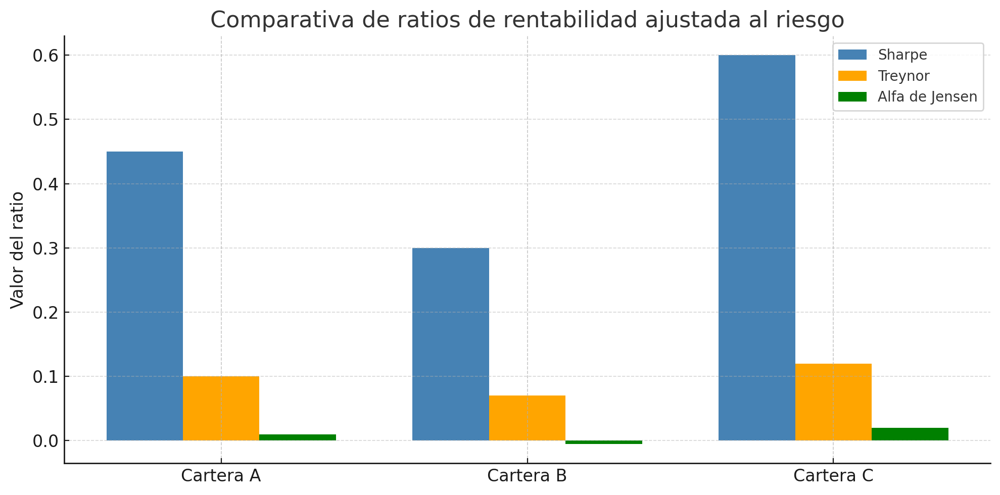
Interpretación:
- La Cartera C presenta los mejores resultados en los tres indicadores: combina alta rentabilidad, eficiencia frente al riesgo sistemático y valor añadido frente al mercado.
- La Cartera A muestra un comportamiento razonable, especialmente en Sharpe y Treynor.
- La Cartera B, en cambio, obtiene peores resultados y presenta un alfa negativo, lo que sugiere una gestión que no ha aportado valor respecto al rendimiento esperado por su beta.
Estos indicadores permiten evaluar objetivamente la calidad de la gestión de carteras desde diferentes ángulos de riesgo.
Tabla resumen:
| Cartera | Sharpe | Treynor | Alfa de Jensen |
|---|---|---|---|
| Cartera A | 0,45 | 0,10 | +0,010 |
| Cartera B | 0,30 | 0,07 | −0,005 |
| Cartera C | 0,60 | 0,12 | +0,020 |
Tracking error y ratio de información
Además de los ratios clásicos como Sharpe o Treynor, existen indicadores diseñados específicamente para evaluar la calidad de la gestión respecto a un índice de referencia (benchmark). Los dos más utilizados son:
Tracking Error (TE)
El tracking error mide la volatilidad de la diferencia entre la rentabilidad realizada de la cartera y la del benchmark:
\[ TE = \text{desviación típica}(R_{p,t} - R_{b,t}) \]
- \(R_{p,t}\): rentabilidad observada de la cartera en el periodo \(t\)
- \(R_{b,t}\): rentabilidad observada del benchmark en el periodo \(t\)
Interpretación:
- Un TE bajo indica una gestión muy similar al índice de referencia (gestión pasiva).
- Un TE alto sugiere una gestión activa, con decisiones alejadas del benchmark.
También puede estimarse a partir de la varianza total de la cartera y su componente sistemático:
\[ \sigma_{\alpha,p} = \sqrt{\sigma_p^2 - \beta_p^2 \cdot \sigma_m^2} \]
Donde \(\sigma_{\alpha,p}\) representa el riesgo activo o no sistemático, es decir, la parte del riesgo no explicada por el mercado.
Ratio de Información (IR)
El ratio de información mide cuánta rentabilidad adicional obtiene una cartera respecto a su benchmark por cada unidad de riesgo activo asumido:
\[ IR = \frac{R_p - R_b}{TE} \]
Donde:
- \(R_p\): rentabilidad media observada de la cartera
- \(R_b\): rentabilidad media observada del benchmark
También puede expresarse en términos esperados, vinculando directamente con el modelo CAPM:
\[ IR = \frac{\alpha_p}{\sigma_{\alpha,p}} = \frac{E(R_p) - \beta_p \cdot E(R_m)}{\sqrt{\sigma_p^2 - \beta_p^2 \cdot \sigma_m^2}} \]
Donde:
- \(E(R_p)\): rentabilidad esperada de la cartera
- \(E(R_m)\): rentabilidad esperada del mercado
- \(\beta_p\): beta de la cartera respecto al mercado
- \(\alpha_p\): alfa esperado de la cartera
- \(\sigma_p\), \(\sigma_m\): volatilidades totales de cartera y mercado
- \(\sigma_{\alpha,p}\): desviación del alfa (tracking error teórico)
El Information Ratio refleja cuánta rentabilidad adicional esperada obtiene una cartera frente a su benchmark por unidad de riesgo activo asumido.
Cuanto mayor sea este ratio, mejor es la eficiencia de la gestión activa.
Importante: uso combinado en el análisis profesional de fondos
En la evaluación institucional (Morningstar, S&P, etc.), no se utilizan estos indicadores de forma aislada. Es habitual combinarlos en índices compuestos de valoración (como el rating de información o el information coefficient) que integran:
- El alfa de Jensen como medida de valor añadido esperado.
- El tracking error como medida del riesgo activo.
- Ajustes por beta, que ponderan el grado de exposición al mercado.
El objetivo es determinar si la rentabilidad adicional justifica el riesgo adicional asumido respecto al índice de referencia.
Comparación con el benchmark y aplicación al análisis de fondos
Una vez calculadas las medidas de rentabilidad y riesgo, es fundamental comparar la cartera con un índice de referencia (benchmark). Esta comparación permite evaluar si la gestión ha aportado valor añadido respecto a una alternativa pasiva.
Los principales enfoques son:
- Comparar la rentabilidad absoluta de la cartera con la del benchmark.
- Evaluar los ratios ajustados al riesgo (Sharpe, Treynor, Alfa de Jensen, Information Ratio) en relación con el benchmark.
- Analizar la consistencia del comportamiento del fondo a lo largo del tiempo.
¿Qué significa “batir al benchmark”?
Una cartera se considera que ha batido al benchmark cuando obtiene:
- Una rentabilidad superior (\(R_p > R_b\)),
- O bien un ratio Sharpe o Treynor superior,
- O un alfa positivo en el marco del CAPM.
Ejemplo de interpretación:
- Si \(R_p > R_b\) pero el ratio de Sharpe es menor, puede que la rentabilidad haya venido acompañada de un riesgo excesivo.
- Si el Information Ratio es positivo y elevado, el fondo ha superado de forma consistente al benchmark, justificando el riesgo activo asumido.
Aplicación práctica: análisis y selección de fondos
Al seleccionar fondos de inversión o evaluar gestores, se debe:
- Identificar el benchmark adecuado para cada fondo según su política de inversión.
- Comparar sus métricas clave con las del índice de referencia.
- Analizar la evolución del alfa, del tracking error y de los ratios ajustados al riesgo.
- Considerar también criterios cualitativos (gestora, filosofía, consistencia, costes).
Estos análisis permiten distinguir entre la gestión activa con valor añadido y aquella que no justifica sus costes ni el riesgo asumido.
Ejemplo comparativo: fondos frente a benchmark
El siguiente gráfico muestra la rentabilidad anual de tres fondos de inversión comparada con la de su benchmark de referencia:
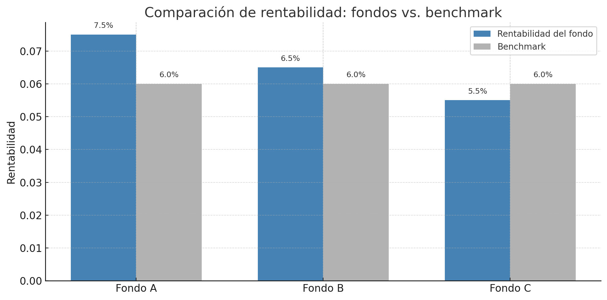
Interpretación:
- Fondo A ha batido al benchmark tanto en rentabilidad como en todos los indicadores: presenta un Sharpe superior (0,45), un alfa positivo (+0,015) y un ratio de información elevado (0,60). Es un ejemplo de gestión activa eficaz.
- Fondo B supera ligeramente al benchmark en rentabilidad, pero con ratios más ajustados. Su alfa es apenas positivo y su Sharpe es inferior al del índice: la eficiencia ajustada al riesgo es limitada.
- Fondo C obtiene peor rentabilidad que el benchmark y presenta alfa negativo y ratio de información negativo, lo que sugiere una gestión activa sin valor añadido.
Este análisis permite valorar no solo el resultado absoluto, sino también la relación entre rentabilidad y riesgo asumido respecto al mercado.
Tabla resumen:
| Fondo | Rentabilidad | Sharpe | Alfa de Jensen | Information Ratio |
|---|---|---|---|---|
| Fondo A | 7,50 % | 0,45 | +0,015 | 0,60 |
| Fondo B | 6,50 % | 0,35 | +0,005 | 0,30 |
| Fondo C | 5,50 % | 0,25 | −0,010 | −0,05 |
Atribución de resultados: proceso y cálculos
La atribución de resultados permite descomponer la rentabilidad obtenida por un fondo o cartera y asignar las causas que la han generado. Es una herramienta esencial para:
- Evaluar la calidad de la gestión.
- Justificar el rendimiento ante el cliente.
- Identificar aciertos o errores en la toma de decisiones.
El proceso distingue entre tres componentes principales:
1. Rentabilidad total añadida
Es la diferencia entre la rentabilidad de la cartera y la del benchmark:
\[ \text{Rentabilidad añadida} = R_p - R_b \]
2. Efecto asset allocation
Mide cuánto ha contribuido la distribución entre clases de activos a esa rentabilidad:
\[ \text{Efecto asset allocation} = \sum_i (w_{p,i} - w_{b,i}) \cdot R_{b,i} \]
- \(w_{p,i}\) y \(w_{b,i}\): ponderación del activo \(i\) en la cartera y el benchmark.
- \(R_{b,i}\): rentabilidad del activo \(i\) en el benchmark.
3. Efecto selección (security selection)
Mide cuánto ha contribuido la selección de activos dentro de cada clase:
\[ \text{Efecto selección} = \sum_i w_{p,i} \cdot (R_{p,i} - R_{b,i}) \]
- \(R_{p,i}\): rentabilidad del activo \(i\) en la cartera.
- \(R_{b,i}\): rentabilidad del mismo activo en el benchmark.
- Si el efecto de asignación es positivo, el gestor acertó en el reparto entre clases de activos.
- Si el efecto de selección es positivo, el gestor eligió activos con mejor comportamiento que los del índice.
- Una rentabilidad añadida positiva requiere que al menos uno de estos efectos haya sido favorable.
Ejemplo práctico de atribución de resultados
A continuación se presenta un ejemplo con tres clases de activos (renta fija, renta variable y liquidez), comparando una cartera con su benchmark en términos de:
- Ponderaciones por clase de activo
- Rentabilidad obtenida por clase
- Cálculo de rentabilidad total y descomposición en efectos
Tabla 1: Datos por clase
| Clase de activo | Ponderación cartera | Ponderación benchmark | Rentabilidad cartera | Rentabilidad benchmark |
|---|---|---|---|---|
| Renta fija | 40 % | 30 % | 3,00 % | 2,50 % |
| Renta variable | 50 % | 60 % | 10,00 % | 8,00 % |
| Liquidez | 10 % | 10 % | 1,00 % | 1,00 % |
Desarrollo de los cálculos
A partir de los datos de la Tabla 1, se calculan los siguientes componentes:
1. Rentabilidad total de la cartera
Se obtiene como suma ponderada de las rentabilidades por clase:
\[ R_p = 0{,}40 \cdot 0{,}030 + 0{,}50 \cdot 0{,}100 + 0{,}10 \cdot 0{,}010 = 0{,}012 + 0{,}050 + 0{,}001 = 0{,}063 \Rightarrow 6{,}30\,\% \]
2. Rentabilidad total del benchmark
Se calcula del mismo modo para el índice:
\[ R_b = 0{,}30 \cdot 0{,}025 + 0{,}60 \cdot 0{,}080 + 0{,}10 \cdot 0{,}010 = 0{,}0075 + 0{,}048 + 0{,}001 = 0{,}0565 \Rightarrow 5{,}65\,\% \]
3. Rentabilidad añadida
Es la diferencia directa entre ambas rentabilidades:
\[ \text{Rentabilidad añadida} = R_p - R_b = 6{,}30\,\% - 5{,}65\,\% = \mathbf{0{,}65\,\%} \]
4. Efecto asset allocation
Evalúa cómo ha influido la distribución de pesos frente al benchmark:
\[ \text{AA} = \sum_i (w_{p,i} - w_{b,i}) \cdot R_{b,i} \]
Por clases:
- Renta fija: \((0{,}40 - 0{,}30) \cdot 0{,}025 = 0{,}01 \cdot 0{,}025 = 0{,}0025\)
- Renta variable: \((0{,}50 - 0{,}60) \cdot 0{,}080 = -0{,}10 \cdot 0{,}080 = -0{,}008\)
- Liquidez: \((0{,}10 - 0{,}10) \cdot 0{,}010 = 0\)
\[ \text{Efecto AA total} = 0{,}0025 - 0{,}008 = \mathbf{-0{,}0055} \Rightarrow -0{,}55\,\% \]
5. Efecto selección
Mide el valor añadido por elegir activos con mejor rendimiento:
\[ \text{Selección} = \sum_i w_{p,i} \cdot (R_{p,i} - R_{b,i}) \]
Por clases:
- Renta fija: \(0{,}40 \cdot (0{,}030 - 0{,}025) = 0{,}002\)
- Renta variable: \(0{,}50 \cdot (0{,}100 - 0{,}080) = 0{,}010\)
- Liquidez: \(0{,}10 \cdot (0{,}010 - 0{,}010) = 0\)
\[ \text{Efecto selección total} = 0{,}002 + 0{,}010 = \mathbf{0{,}012} \Rightarrow 1{,}20\,\% \]
Comprobación
\[ \text{Rentabilidad añadida} = \text{AA} + \text{Selección} = -0{,}55\,\% + 1{,}20\,\% = \mathbf{0{,}65\,\%} \]
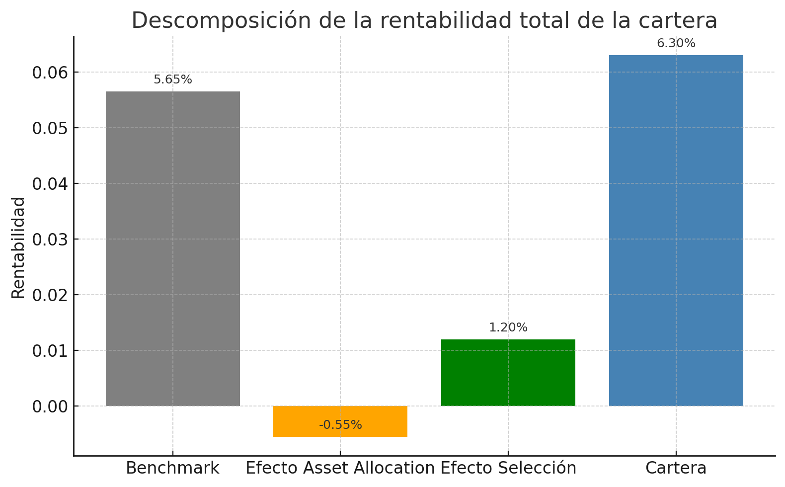
Tabla 2: Resultados agregados
| Indicador | Valor |
|---|---|
| Rentabilidad cartera | 6,30 % |
| Rentabilidad benchmark | 5,65 % |
| Rentabilidad añadida | 0,65 % |
| Efecto asset allocation | −0,55 % |
| Efecto selección | +1,20 % |
- La rentabilidad total añadida frente al benchmark es del 0,65 %.
- El efecto selección es positivo: el gestor ha escogido activos más rentables dentro de cada clase.
- El efecto asset allocation es negativo: la distribución entre clases fue menos eficiente que la del índice.
Este análisis permite atribuir el resultado final a decisiones de selección o asignación de activos.